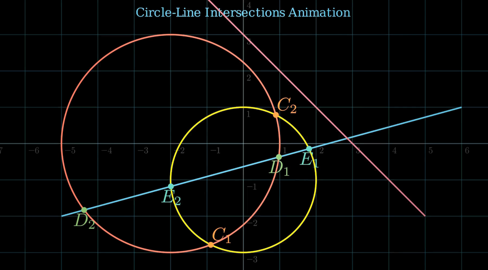

title: “Visualizing Geometric Intersections with Manim” format: revealjs editor: visual —
Introduction
This animation demonstrates how a straight line can intersect with a circle, resulting in: - Two points of intersection (secant line): The line cuts through the circle. - No intersection: The line misses the circle entirely. - Single point of intersection (tangent line): The line just touches the circle.
Mathematically, these intersection points are found by solving the simultaneous equations of the circle and the line: - Equation of the circle: \((x - h)^2 + (y - k)^2 = r^2\), where \((h, k)\) is the center and \(r\) the radius. - Equation of the line: \(y = mx + c\) (or any linear form).
Applications:
This concept is used in collision detection, where the intersection determines if an object (circle) is hit by a projectile (line).
1. Imports and Setup
from manim import *
import numpy as npExplanation: - manim: This is the animation engine. It provides all the geometric objects (like Circle, Line, Dot), scene control (Scene, Create, Write), and math tools. - numpy: Used for mathematical calculations—square roots, vector norms, and arithmetic. Essential for computing intersections.
2. circle_line_intersection() Function
def circle_line_intersection(circle: Circle, line: Line):This function computes the points where a line intersects a circle using analytical geometry.
cline = line.copy().shift(-circle.get_arc_center())- Moves the line so the circle center is at the origin.
- Why? The math for intersecting a circle centered at (0, 0) is simpler.
x0, y0 = circle.get_arc_center()[:2]- Gets the original center of the circle, to translate back later.
x1, y1 = cline.get_start()[:2]
x2, y2 = cline.get_end()[:2]
r = circle.width / 2- Extracts the endpoints of the shifted line.
- Radius is calculated from width (
width = 2 × radius).
dx = x2 - x1
dy = y2 - y1
dr = np.sqrt(dx**2 + dy**2)
D = x1 * y2 - x2 * y1
Delta = r**2 * dr**2 - D**2Dis a determinant related to area.Deltais the discriminant:- Δ < 0: No intersection
- Δ = 0: Tangent
- Δ > 0: Secant (two points)
if Delta < 0:
return []- No real solution → the line misses the circle.
sqrt_Delta = np.sqrt(Delta)
sign_dy = np.sign(dy) if dy != 0 else 1 # avoid zero division
sx1 = (D * dy + sign_dy * dx * sqrt_Delta) / (dr**2) + x0
sy1 = (-D * dx + abs(dy) * sqrt_Delta) / (dr**2) + y0
sx2 = (D * dy - sign_dy * dx * sqrt_Delta) / (dr**2) + x0
sy2 = (-D * dx - abs(dy) * sqrt_Delta) / (dr**2) + y0- Uses analytical formulas to compute intersection point(s)—shifted back using
x0,y0.
if Delta == 0:
return [np.array([sx1, sy1, 0])]
else:
return [np.array([sx1, sy1, 0]), np.array([sx2, sy2, 0])]- Only one intersection (tangent) if
Delta == 0, otherwise two points (secant).
3. circle_circle_intersection() Function
def circle_circle_intersection(circle1: Circle, circle2: Circle):This function finds the intersection points between two circles using a geometric method.
c0 = circle1.get_center()
c1 = circle2.get_center()
r0 = circle1.width / 2
r1 = circle2.width / 2- Extracts centers and radii of both circles.
v = c1 - c0
d = np.linalg.norm(v)v: Vector between centers.d: Distance between centers.
if d > r0 + r1 or d == 0 or d < abs(r0 - r1):
return []- If circles are too far apart, exactly concentric, or one is inside the other with no intersection → no intersection.
u = v / duis the unit direction vector from center 1 to center 2.
xvec = c0 + (d**2 - r1**2 + r0**2) * u / (2*d)- Midpoint between the two intersection points (the base point).
uperp = np.array([u[1], -u[0], 0])uperp: A vector perpendicular tou(used to offset to the left/right).
a = np.sqrt(
(-d + r1 - r0) *
(-d - r1 + r0) *
(-d + r1 + r0) *
(d + r1 + r0)
) / (2 * d)- Computes the distance from base to each intersection point using a Heron-like formula.
return [xvec + a * uperp, xvec - a * uperp]- Returns the two actual points of intersection.
4. line_line_intersection() Function
def line_line_intersection(line1: Line, line2: Line):
return line_intersection([line1.get_start(), line1.get_end()],
[line2.get_start(), line2.get_end()])- Uses
manim.utils.geometry.line_intersection()internally. - Assumes 2D line segments, returns a point of intersection.
5. IntersectionTest Scene
This is the core animation class that uses all the geometry logic.
Title and Grid
title = Text("Circle-Line Intersections Animation", color=BLUE, font_size=24)
self.play(Write(title))
number_plane = NumberPlane().add_coordinates().set_opacity(0.2)
self.add(number_plane)- Displays an animated title.
- Adds a coordinate grid for context.
Drawing Objects
circ1 = Circle(radius=3, color=RED).shift(2 * LEFT)
circ2 = Circle(radius=2, color=YELLOW).shift(DOWN)- Two circles with different positions and sizes.
line1 = Line([-5, -2, 0], [6, 1, 0], color=BLUE)
line2 = Line([-1, 4, 0], [5, -2, 0], color=MAROON)- Two diagonal lines intersecting the circles.
Intersections
Circle-Circle:
Cs = circle_circle_intersection(circ1, circ2)- Calls the custom function to get intersection points.
Cdots = VGroup(
*[
VGroup(Dot(p, color=ORANGE), MathTex(f"C_{{{i+1}}}").next_to(p, UR, buff=0.05))
for i, p in enumerate(Cs)
]
)- Places a dot and label (C₁, C₂) at each intersection.
Circle-Line:
Ds = circle_line_intersection(circ1, line1)
Ddots = VGroup(
*[
VGroup(Dot(p, color=GREEN), MathTex(f"D_{{{i+1}}}").next_to(p, DOWN, buff=0.1))
for i, p in enumerate(Ds)
]
)- Intersects the line with the first circle, labels them D₁, D₂.
Es = circle_line_intersection(circ2, line1)- Same for the second circle → E₁, E₂.

Line-Line:
F = line_line_intersection(line1, line2)
Fdot = VGroup(Dot(point=F, color=WHITE), MathTex("F").next_to(F, UP, buff=0.1))- Intersects the two lines, shows point F.
Text Annotations
text1 = Text("Circle-Circle Intersection: C1, C2", font_size=14).shift(UP * 3 + RIGHT * 5)
text2 = Text("Circle-Line Intersection: D1, D2, E1, E2", font_size=14).next_to(text1, DOWN, buff=0.1)
text3 = Text("Line-Line Intersection: F", font_size=14).next_to(text2, DOWN, buff=0.1)- Adds a legend/explanation on the top right of the screen.
Final Transition
self.play(FadeOut(*self.mobjects), run_time=4)- Smoothly fades everything out to conclude the animation.
Summary of Key Concepts
| Concept | Why It Matters |
|---|---|
| Coordinate Translation | Simplifies math, lets you assume origin at (0,0) |
| Determinants & Δ | Help decide how/if objects intersect |
| Scene Construction | Allows animation sequencing in Manim |
| Labeling & Coloring | Clarifies intersection points and relationships |